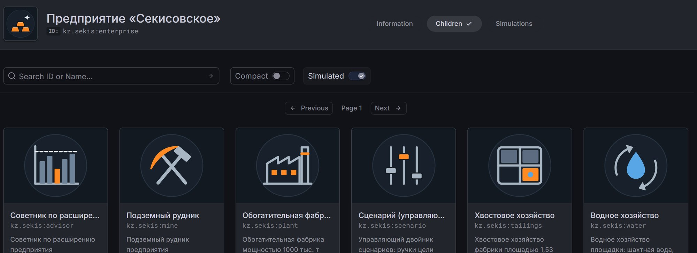

Иерархия _parents · двойников
Предприятие «Секисовское»1
Подземный рудник1
Горизонты +320 … −300 м12
Очистные блоки18
Уклоны ТУ-1, ТУ-22
Стволы ВС-1, ВС-2, ВС-3 · восстающие3 · 4
Главные вентиляторы · насосные станции5 · 3
Самосвалы · ПДМ · буровые установки12 · 10 · 5
Обогатительная фабрика · рудный склад · линии1 · 1 · 6
Хвостовое хозяйство · дамбы1 · 4
Водное хозяйство · илоотстойники · посты1 · 2 · 2
Сценарий · советник (управляющие)1 · 1
Типы — kz.sekis.type:<kind>, двойники — kz.sekis:<name>; признаки обновляет имитатор, единицы записаны в атрибуте units.
Технологические связи link_*
РудаОчистные блоки→Уклоны ТУ-1 / ТУ-2→Рудный склад→Линии фабрики→Дамба № 4
link_ore_route · link_portal_to · link_feeds · link_tailings_to · link_active_dam
ВоздухВентиляторы⇄Стволы ВС-1…3, ВПВ→Горизонты→Вытяжные ВХВ 7, 8, 10
link_fan / link_airway · link_air_intake · link_air_exhaust
ВодаГоризонты→Насосные −50, −200→Насосная +150→Илоотстойники→Фабрика · Волчевка
link_drains_to · link_discharges_to · link_overflows_to · link_water_from · link_points

Grafana → OpenEgiz → Twins: корневой двойник kz.sekis:enterprise и его шесть дочерних — рудник, фабрика, хвосты, вода, сценарий, советник.